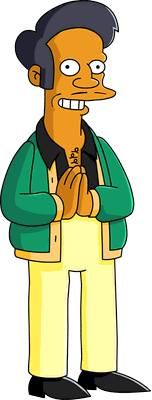

Tenemos una gran variedad de productos con temática de Los Simpsons. Desde bebidas y alimentos icónicos, como
las clásicas cervezas Duff, así como productos de referencias más oscuras. Todo lo tenemos acá, en el
Kwik-E-Mart
"¡Gracias, vuelva prontos!"

Apu Nahasapeemapetilon, Humilde fundador del Kwik-E-Mart